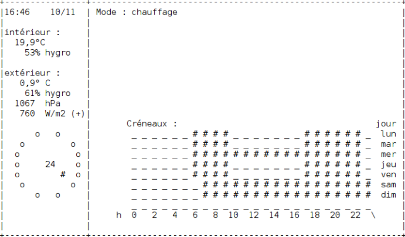

Compétences développées :
- Maniement des Tableaux
- Progression sur les algorithme contenant des boucles
- Utilisation de l'IDE Netbeans
L'objectif du projet Odomo était de développer une station météorologique personnelle, en le décomposant en trois parties distinctes : MÉTÉO, CHAUFFAGE et JARDIN. J'ai pu y contribuer en implémentant des matrices pour afficher les données relatives à la pluviométrie et au mode de chauffage.
